Co-op Commander Guide: Mengsk
Emperor of the Dominion
Sections on this Page
Commander Summary
Mengsk uses an army of conscripted workers and soldiers to bolster his defenses backed up by powerful units from his Royal Guard and Artillery fire from the large distances.

Level Unlocks
| Level/Icon | Name | Description |
|---|---|---|
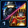 |
Law and Order | Mengsk conscripts Dominion Laborers instead of SCVs to work and Dominion Troopers instead of Marines to fight. His Royal Guard units can level up, gaining new abilities and improvements to existing abilities. |
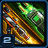 |
Expanded Arsenal | Allows Troopers to equip CPO-7 Salamander Flamethrowers and Hailstorm Launchers. |
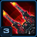 |
New Unit: Earthsplitter Ordnance |
Randomly bombards near a target location, dealing damage to ground units in the area. Enables Contaminated Strike from the top panel. Can attack ground units. |
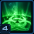 |
Contaminated Strike | Unlocks the ability to launch experimental payloads, fired from your Earthsplitter Ordnance randomly near a target area. |
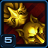 |
Unquestioned Authority | Indoctrinated Laborers, Indoctrinated Troopers, and Royal Guards provide Imperial Support, which increases Imperial Mandate generation. Unlocks the Amplified Airwaves upgrade, which doubles the Imperial Support provided by Indoctrinated Laborers and Troopers (Researched at the Fusion Core). |
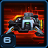 |
Engineering Bay Upgrade Cache |
Unlocks the following upgrades at the Engineering Bay:
|
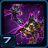 |
Wolves of War | Dogs of War now deploys additional Mutalisks and Ultralisks at higher Imperial Mandate levels. |
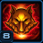 |
Basic Royal Guard Upgrade Cache |
Unlocks the following upgrades:
|
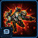 |
New Unit: Blackhammer |
Royal Guard heavy assault mech. Can use Overwatch Mode. Built from the Factory. Can attack ground and air units. |
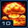 |
Nuclear Annihilation | Unlocks the ability to call down a rain of Tactical Missiles followed by a Nuclear Missile. Activate Nuclear Annihilation from the top panel. |
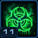 |
Psychoactive Payload | Contaminated Strike now Fears enemy units on impact, causing them to run around in panic. |
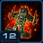 |
New Unit: Pride of Augustgrad |
Powerful Royal Guard warship. Can use Yamato Cannon and Tactical Jump. Built from the Starport. Can attack ground and air units. |
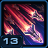 |
Complete Annihilation | Increased the number of Tactical Missiles dropped by Nuclear Annihilation from 20 to 40. |
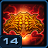 |
Advanced Royal Guard Upgrade Cache |
Unlocks the following upgrades:
|
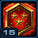 |
Promotion Granted |
Royal Guards can now attain Rank 3, gaining the following abilities
|
Highlighted rows denote large power spikes for the commander.
Achievements
The commander-specific achievements for Mengsk are:
| Achievement | Name | Description |
|---|---|---|
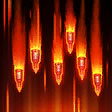 |
Earthbroken | Deal 200,000 damage with Earthsplitter Ordnance bombardments. |
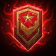 |
I Am the Law | Kill 2000 enemy units in total with Contaminated Strike, Dogs of War, and Nuclear Annihilation. |
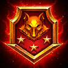 |
The Best of the Best of the Best, Emperor | Reach Rank 3 with at least 50 supply of Royal Guard units simultaneously on Hard difficulty. |
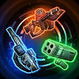 |
This Was Your Rifle | Pick up 500 weapons with Dominion Troopers. |
Calldowns
The calldowns for Mengsk, at level 15, with no mastery points added are:
| Calldown | Name | Description | Recommended Usage | Numbers |
|---|---|---|---|---|
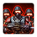 |
Forced Conscription | Drops a Supply Bunker from orbit along with 6 unfortunate Trooper souls to man it. |
|
|
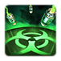 |
Contaminated Strike | Loads all your Earthsplitter Ordnance with an experimental payload to target any area on the map. Payloads randomly land near the target area, causing enemies to run in fear and saturating the area in irradiated biomaterial, causing all enemies who enter to take 5 damage per second. Affected units cannot cloak. |
|
|
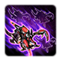 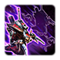 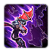 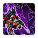 |
Dogs of War | Deploys 30 enthralled Zerglings at the target location that last for 60 seconds. Enthralled zerg will seek out and attack the nearest enemy. Deploys additional enthralled zerg based on Imperial Mandate. 50%: Deploys 10 additional Hydralisks. 75%: Deploys 10 additional Mutalisks. 100%: Deploys 5 additional Ultralisks. |
|
|
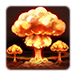 |
Nuclear Annihilation | Blankets a target area with a seemingly endless barrage of 40 Tactical Missiles, each dealing 150(+100 vs. structures) damage in a small area, followed by a Nuclear Missile, which deals 500(+300 vs. structures) damage in a large area. |
|
|
Sub-Ascension Leveling
Difficulty: Moderate
Prior to gaining access to Earthsplitter Ordnances, Mengsk levelling can be extremely difficult, as it makes it impossible for him to take engagements without losing his army. Once Ordnances are unlocked, they should be used to weaken enemy bases and attack waves before pushing in. Shock Divisions should be used to provide damage, with Troopers in the front to keep enemy units off them.
Masteries
Below are the three Power Sets for Mengsk with the recommended point allocations for each. Note that these are meant to serve a general, all-purpose build that is effective across all maps with no Prestiges selected. You are highly encourged to change these masteries to suit your playstyle and particular challenges you face (e.g. Weekly Mutations).
Power Set 1:
| Power | Value | Recommended Points to Add | Further Considerations |
|---|---|---|---|
| Laborer and Trooper Imperial Support | 1% per point 30% maximum |
30 | The extremely high cost of the Royal Guard, combined with the relatively low rate of Mandate generation by them makes the Royal Guard mastery very uncompetitive. This is because players will always have access to Laborers and Troopers, which generate a lot more Mandate when around an Imperial Witness. |
| Royal Guard Imperial Support | 1% per point 30% maximum |
0 |
Given the varied playstyles, the Laborer mastery is a better pick here because it provides a benefit regardless of the playstyle used, allowing the commander to be effective on all maps.
Power Set 2:
| Power | Value | Recommended Points to Add | Further Considerations |
|---|---|---|---|
| Terrible Damage | 1% per point 30% maximum |
? | The Terrible Damage mastery can be used for a more topbar-centric focused build, assuming a maximum amount of Mandate generation, while the Royal Guard Cost allows you to increase the quantity of Royal Guard units in your army. |
| Royal Guard Cost | -0.66% per point -20% maximum |
? |
If the player chooses to use the Dogs of War ability frequently (and potentially in fast expands if they struggle with the multitasking), the Terrible Damage would be a more beneficial pick for them. Otherwise, the Royal Guard Cost is the better choice here as it allows you to directly strengthen your army.
Power Set 3:
| Power | Value | Recommended Points to Add | Further Considerations |
|---|---|---|---|
| Starting Imperial Mandate | 1 per point 30 maximum |
30 | The Guard Experience Gain rate mastery can be used to allow you to quickly level up Royal Guard units to gain access to their Rank-3 bonuses, while the Starting Mandate provides more early-game possibilities for the commander. |
| Royal Guard Experience Gain Rate | 0.5% per point 15% maximum |
0 |
The Starting Imperial Mandate is the better choice here because it provides Mengsk with access to two Supply Bunkers at the 2 minute mark, allowing him to fast expand and build his economy.
Prestiges
Below are the prestiges for Mengsk. Note that "Effective Level" is the level at which the prestige achieves it full effect.
| Level | Name | Description | Effective Level | Notes |
|---|---|---|---|---|
| 1 | Toxic Tyrant |
|
11 |
|
| This prestige works best when a player decides to use Earthsplitters as part of their strategy. While Nuclear Annihilation is unavailable, Contaminated Strike can be used on top of enemy bases, just before Mengsk's army pushes in. Fear and the increased damage received can be used to launch very effective assaults on enemy bases. This prestige also further simplifies dealing with attack waves. Not only does Fear break the AI move command of the attack wave, but the extra damage bonus dealt makes it easier to kill off the units while under the effect. | ||||
| Level | Name | Description | Effective Level | Notes |
|---|---|---|---|---|
| 2 | Principal Proletariat |
|
1 |
|
| This prestige allows a player to focus on a mass Royal Guard build by allowing them to quickly get Royal Guards out at the start of the game, thus helping their early game. This prestige works well with the Royal Guard Cost reduction mastery and really well with the Royal Guard Imperial Mandate Support mastery, resulting in one of the highest Mandate generation rates possible, due to increased Royal Guard Supply costs. | ||||
| Level | Name | Description | Effective Level | Notes |
|---|---|---|---|---|
| 3 | Merchant of Death |
|
2 |
|
| This prestige allows Mengsk to quickly ramp up his earlygame DPS, by providing a large cost reduction to equipping improved weapons to his troopers. Due to the lack of Intercessors, any damage taken by Mengsk's Aegis Guard and Emperor's Shadows is permanent, while Troopers need to be converted back to Laborers to repair themselves. Thus, Bunker play is encouraged to reduce damage taken by the army. Players will also need to be careful while pushing into bases and attack waves. It is recommended to use calldowns or Earthsplitters to first soften up enemy forces before cleaning up with the army to reduce damage taken. Additionally, a few Troopers can be sacrificed into an attack wave to weaken it. However, pay attention to the army footprint. Waves that spread out over a large area result in much less efficient trades than those that are clumped up. Troops should also not be suicided into enemy bases, as explosions from weapons will probably only kill a single unit at a time. | ||||
All of Mengsk's prestiges are viable, depending on the player's preferred playstyle. However, for general play, Merchant of Death offers Mengsk the versatility in being able to deal with a wide variety of situations. While upgraded troopers are slightly more expensive, they pay back in dividends by increasing your overall effectiveness in trading with Amon.
Recommended Army Composition
The recommended army composition for Mengsk is below. Note that this assumes no Prestige talent selected and recommended Mastery Allocations. This is a basic recommendation for your army framework. It is recommended to gain an understanding for each of the units in the Units section and further add tech units so that you are able to better handle the situations you face.
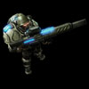
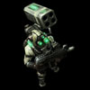
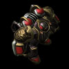
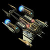
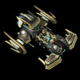
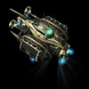
A mix of different trooper types is important. Assault Troopers deal damage while Rocket Troopers handle air units with ease. The ratio of each will depend on the enemy composition and map objectives. Use Aegis Guards to tank for the troopers and Imperial Intercessors to heal damaged units. Tech up to a Pride of Augustgrad for powerful wave-handling abilities. Remember to put Imperial Witnesses into Patriot mode for extra buffs to your army.
Combat Units
For more information on Mengsk's unit stats, comparison between units and upgrade calculations, visit the Data Tables page.
Mengsk's combat units are listed below:
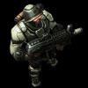
Dominion Trooper
- The most basic unit available to Mengsk.
- Can be equipped with one of three weapons to increase its stats and damage bonuses.
- Useful for defending the first attack wave on most missions if loaded into a Bunker.
Dominion Assault Trooper
- Good all-round damage output.
- Has double the damage output of a regular Dominion Trooper.
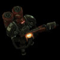
Dominion Flame Trooper
- Has much more HP than other Troopers and starts with 1 armor.
- Useful for dealing with clumps of Light units like Zerg.
Dominion Rocket Trooper
- Has a very powerful anti-air attack that deals bonus to Armored air targets.
- Still uses the same unupgraded weapon as Trooper for anti-ground attack.
Aegis Guard
- Useful for tanking for other units on the frontline.
- Damage against Armored targets is great, especially with the High-Grade Stimpacks unlocked.
- Rank 2 upgrade enables them to be highly effective against waves with many low HP units like Zerg and Classic Bio.
- Rank 2 splash damage is based on the armor type of the primary target, and ignores armor of units that take splash damage.
Skills:
| Skill | Name | Description | Cooldown | Rank Required |
|---|---|---|---|---|
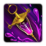 |
High-Grade Stimpacks | Increases attack speed by 200% for 10 seconds. | 30 seconds | 3 |
Upgrades:
| Upgrade | Name | Effect |  / / |
Research Time |
|---|---|---|---|---|
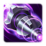 |
Incapacitator Shells | Allows the Aegis Guard's attacks to slow enemy units (-60% movement speed for 3 seconds). | 100/100 | 60 seconds |
Rank Unlocks:
| Rank | Total Experience | Rank Bonus |
|---|---|---|
| 1 | 1200 | 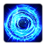 Aegis Barrier: Grants the Aegis Guard a shield that absorbs 300 damage. When the shield takes fatal damage, it releases a pulse of energy that knocks back nearby ground units. This shield refreshes to full every 60 seconds. |
| 2 | 4000 | Attacks create a cone of shrapnel, dealing 20% damage to enemies behind the target. |
| 3 | 8800 | High-Grade Stimpacks: Increases attack speed by 200% for 10 seconds. |
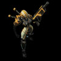
Emperor's Shadow
- Tactical Missile Strike is not a very useful ability due to its small size.
- Pyrokinetic Immolation can be used to deal with small Biological waves, such as Zerglings.
- EMP Blast is important when dealing with high damage output Mechanical unit compositions.
- Multiple Royal Academies will allow Ghosts to have several Nukes available to launch.
Skills:
| Skill | Name | Description | Cooldown | Rank Required |
|---|---|---|---|---|
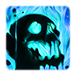 |
Pyrokinetic Immolation | Immolates a target Biological enemy for 20 seconds, dealing 20 damage per second to themselves and nearby Biological enemies. Can be set to Autocast. Requires 75 energy. | 5 seconds | 0 |
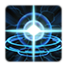 |
EMP Blast | Deals 100 damage to shields and depletes the energy of enemy units in the target area. Stuns Mechanical units for 1 second. Cloaked units are revealed for 10 seconds after being hit. Can be set to Autocast. Requires 75 energy. | 8 seconds | 0 |
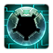 |
Labyrinth Cloak | Prevents the Emperor's Shadow from taking any damage for 10 seconds after being attacked. Cannot occur more than once every 30 seconds. | 30 seconds | 1 |
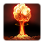 |
Tactical Missile Strike | Calls down a Tactical Missile Strike at a target location. Tactical Missiles take 4 seconds to land, but they deal up to 150 (+100 vs. structures) damage to enemies in a small radius. (100% damage within 1.5 range of the hit, 50% from 1.5 to 2.0 range) Cooldown is time to build one missile. |
90 seconds | 0 |
Upgrades:
| Upgrade | Name | Effect | / |
Research Time |
|---|---|---|---|---|
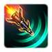 |
Sovereign Tactical Missiles | Emperor's Shadows no longer need to channel the Tactical Missile Strike ability. | 100/100 | 60 seconds |
Rank Unlocks:
| Rank | Total Experience | Rank Bonus |
|---|---|---|
| 1 | 1200 | Labyrinth Cloak: Prevents the Emperor's Shadow from taking any damage for 10 seconds after being attacked. Cannot occur more than once every 30 seconds. |
| 2 | 4000 | Increases Pyrokinetic Immolation periodic damage by 50%. Increases EMP Blast stun duration by 1 second. |
| 3 | 8800 | Upon target's death, Pyrokinetic Immolation deals 50 damage to nearby enemies. EMP Blast drains all of the target's energy and deals damage equal to that amount. |
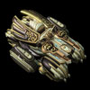
Shock Division
- Useful when being placed behind Bunkers to deal with ground-based attack waves.
- Can be used as an anti-air option when loaded sieged onto a Medivac.
- Damage output in a Medivac is out-performed by much better anti-air options, such as Blackhammers and Prides of Augustgrad.
Upgrades:
| Upgrade | Name | Effect | / |
Research Time |
|---|---|---|---|---|
| Armament Stabilizers | Allows Shock Divisions in Siege Mode to fire at air units at a reduced rate (66%) while being carried by an Imperial Intercessor. | 100/100 | 60 seconds | |
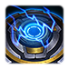 |
Smart Servos | Reduces the transformation time (by 66%) of Shock Divisions, Blackhammers, and Sky Furies. | 100/100 | 60 seconds |
Rank Unlocks:
| Rank | Total Experience | Rank Bonus |
|---|---|---|
| 1 | 1800 | 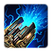 Shock and Awe: In Siege Mode, this unit's attacks now stun enemy units for 1 second. Can only occur once every 5 seconds on each unit. |
| 2 | 6000 | Increases vision and attack range by 2 in Siege Mode. |
| 3 | 13200 | Increases the area of sieged attacks by 40%. |
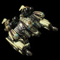
Blackhammer
- Good tank unit for the frontline with decent anti-ground damage.
- Overwatch mode is a great way of dealing with large numbers of low HP air units.
Upgrades:
| Upgrade | Name | Effect | / |
Research Time |
|---|---|---|---|---|
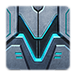 |
Bulwark Field | Blackhammers provide nearby friendly ground units (within 5 range) +5 armor. | 100/100 | 60 seconds |
| Smart Servos | Reduces the transformation time (by 66%) of Shock Divisions, Blackhammers, and Sky Furies. | 100/100 | 60 seconds |
Rank Unlocks:
| Rank | Total Experience | Rank Bonus |
|---|---|---|
| 1 | 2400 | Increases the area of effect of Overwatch Mode by 50%. |
| 2 | 8000 | Increases the range of Overwatch Mode by 2. |
| 3 | 17600 | Increases attack speed in Overwatch Mode by 33%. |
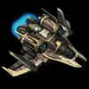
Sky Fury
- Too expensive given its role, which is overshadowed by other Mengsk units.
- Can be used to deal with Massive targets after reaching Rank 1.
- At Rank 2, it's DPS increases when its mode is changed for 5 seconds, which can be used to provide bursts of damage.
Upgrades:
| Upgrade | Name | Effect | / |
Research Time |
|---|---|---|---|---|
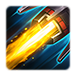 |
Aesir Turbines | Increases the movement speed of Sky Furies by 55%. | 100/100 | 60 seconds |
| Smart Servos | Reduces the transformation time (by 66%) of Shock Divisions, Blackhammers, and Sky Furies. | 100/100 | 60 seconds |
Rank Unlocks:
| Rank | Total Experience | Rank Bonus |
|---|---|---|
| 1 | 1200 | Deals bonus damage (50) to Massive targets. |
| 2 | 4000 | Tactical Realignment: After transforming, this unit gains 50% increased attack damage for 5 seconds. Cannot occur more than once every 15 seconds. |
| 3 | 8800 | Evasive Maneuvers: This unit has a 50% chance to evade attacks.  Phoenix Protocol: When this unit takes fatal damage, the Sky Fury transforms to Fighter mode and temporarily gains a barrier that absorbs 400 damage for 15 seconds. Can only occur once every 90 seconds. |
Imperial Intercessor
- Important unit for keeping Troopers alive in battle.
- Both upgrades are very useful to improving the effectiveness and survivability of the Intercessor.
Skills:
| Skill | Name | Description | Cooldown | Rank Required |
|---|---|---|---|---|
| Heal | Heals a friendly biological target. Heals 9 life per 3 energy. |
0 seconds | 0 | |
| Ignite Afterburners | Increases this unit's movement speed by 70% for 8 seconds. | 15 seconds | 0 |
Upgrades:
| Upgrade | Name | Effect | / |
Research Time |
|---|---|---|---|---|
| Dual Resuscitators | Allows Imperial Intercessors to heal two targets at the same time. | 100/100 | 60 seconds | |
| Scatter Veil | Allows Imperial Intercessors to permanently cloak and provides them with a shield that absorbs 100 damage. | 50/50 | 60 seconds |
Imperial Witness
- A critical unit for Mandate generation for Mengsk.
- Players should try to rush this unit and place it in Patriot Mode over their own mineral lines.
- Should not be placed on ally mineral lines as it does not generate Mandate, and movement speed increases do not raise resource income after saturation.
- Can be put into Patriot Mode in the battlefield over areas you will be fighting in to take advantage of the movement speed and attack speed buffs.
- Provides 20% Attack Speed and Movement Speed buff when in Patriot mode (15 range).
Upgrades:
| Upgrade | Name | Effect | / |
Research Time |
|---|---|---|---|---|
| Amplfied Airwaves | Doubles the Imperial Support Laborers and Troopers provide when affected by the Imperial Witness's Indoctrinate ability. | 100/100 | 60 seconds |
Pride of Augustgrad
- Great unit for dealing with clumps of enemy units in attack waves.
- Yamato Cannon will retarget units once Rank 3 is reached, preventing overkilling a unit.
Skills:
| Skill | Name | Description | Cooldown | Rank Required |
|---|---|---|---|---|
| Yamato Cannon | Blasts a target with a devastating plasma cannon, causing 300 damage. | 120 seconds | 0 | |
| Tactical Jump | Warps to the target location. Battlecruiser is invulnerable while warping. | 60 seconds | 0 |
Upgrades:
| Upgrade | Name | Effect | / |
Research Time |
|---|---|---|---|---|
| Field-Assist Targeting System | Allows Pride of Augustgrad to grant nearby friendly ranged ground units +1 increased range. | 100/100 | 60 seconds |
Rank Unlocks:
| Rank | Total Experience | Rank Bonus |
|---|---|---|
| 1 | 3000 | Yamato Cannon and Tactical Jump hold an additional charge. |
| 2 | 10000 | Yamato Cannon deals damage in an area around the target. |
| 3 | 22000 | Yamato Cannon fires 2 additional times, choosing new targets. |
Build Order
Below is the standard economic build order for Mengsk. For more information on how to read and construct your own build orders, please check the Build Order Theory page.
13 Bunker Calldown at Expo
24 Bunker keeping 16 laborers on Main
25 Unload expo bunker + clear rocks
28 4 Laborers -> Expo
30 Enlistment Center with 4 Laborers
32 Troopers to Laborers to fast-build expo
32 Bunker Calldown, Unload to Laborer
38 Refinery with 3 Laborers
38 Refinery with 3 Laborers
39 Refinery with 3 Laborers
41 Refinery with 3 Laborers
45 Barracks with 8 Laborers
50 Factory with 8 Laborers
53 Starport with 8 Laborers
56 Imperial Witness
Gameplay Guide
Playstyle Traps
Weapon upgrades for Troopers may seem expensive, but they can greatly increase the unit's performance in combat. Make sure to utilize any floating minerals to upgrade Trooper weapons where possible.
Finally, it can be very tempting to try and build many of the Royal Guard units. Doing so means that the experience you get from kills is split among more units, slowing down their levelling up through Ranks. While for smaller units (such as the Aegis Guard), it might not be too impactful, it can be very problematic for larger units such as the Pride of Augustgrad. These units gain a significant power spike at Rank 3 and is potentially the rank where they become invaluable. Having several Prides of Augustgrad, combined with their high levelling experience can prevent a player from reaching the rank which makes them important units.
Unit Ranks
Mengsk's Royal Guard units have a Veterancy mechanic that allows them to level up as enemy units are killed around the map. Once a certain amount of experience is reached, the unit ranks up, gaining access to additional skills or bonuses. The leveling up mechanics works as follows:
- When an enemy unit is killed, 100 experience per supply cost of unit killed is "dropped".
- If the unit is a non-Heroic unit with 0 supply cost, it will drop no experience.
- If the unit is a Heroic unit with 0 supply cost, it will drop 800 experience.
- Dropped experience is equally split among all eligible units (Royal Guard, not at max rank) within 15 range of the unit killed.
- If there are no eligible units within 15 range of the unit killed, all eligible units on the map get an equal split of the dropped experience.
- Once a Royal Guard unit has reached maximum rank, it is removed from the pool of eligible units so as to not waste experience.
Laborer Multi-building
Mengsk can send multiple Laborers to build a structure. The time taken to complete a structure based on the number of Laborers building is as follows:
| Laborers | Build Time (%) |
|---|---|
| 1 | 100 |
| 2 | 62.5 |
| 3 | 45.5 |
| 4 | 35.7 |
| 5 | 29.4 |
| 6 | 25 |
| 7 | 21.7 |
| 8 | 19.2 |
| 9 | 17.2 |
| 10 | 15.6 |
Fast Expanding
With 30 points into the Starting Mandate Mastery, Mengsk has access to one of the following listed combinations of calldown usage once he hits 50 Mandate, which is when double-Bunker expands begin. Single bunker expands can be done at the start of the game.
- Two Bunkers
- One Bunker, One Level 1 Dogs of War
- One Level 2 Dogs of War
The most optimal expands (shown below) will require the player to use the Bunker calldown as much as possible, while shying away from using the Zerg calldown. This is because the Bunker calldown provides the player with extra Troopers which can then be converted back to Laborers for saturating the expansion. However, if the player finds these expands difficult, a Zerg calldown instead of a Bunker may help (although they have not been tested).
Below are pictures that show how to fast-expand on maps. These require a lot of practice to pull off, but can put you ahead economically.
| Map | Race | Player 1 Expansion | Player 2 Expansion |
|---|---|---|---|
| Chain of Ascension | |||
| Cradle of Death | Not worth fast expanding as risks are too high to lose Troopers and Bunkers. | ||
| Dead of Night | No contested expansion | ||
| Lock & Load | No contested expansion | ||
| Malwarfare* | |||
| Miner Evacuation | Race doesn't affect Expansion | ||
| Mist Opportunities | No contested expansion | ||
| Oblivion Express | No contested expansion | ||
| Part & Parcel* | |||
| Rifts to Korhal | No contested expansion | ||
| Scythe of Amon | Race doesn't affect Expansion | Note: Fast expanding on this mission slows your mission completion time. Use the Bunker calldowns on Sliver #4 (South West) and clear those. Slivers #3 (North) and #5 (North West) can be cleared with your Nuclear Annihilation ability. Slivers #1 (Base) and #2(Expansion) can be cleared with Earthsplitters that you will build throughout the course of the mission. |
|
| Temple of the Past | No contested expansion | ||
| The Vermillion Problem | |||
| Void Launch | No contested expansion | ||
| Void Thrashing | No contested expansion | ||
*Due to how lightly this mission is contested, only one Bunker is required, allowing you to place your second Bunker at your main, unloading, and converting the Troopers to Laborers to further saturate your main mineral line.
Earthsplitters
Earthsplitters are a key part of Mengsk gameplay. They are used to soften attack waves and enemy bases, allowing Mengsk's more fragile army of conscripts to take more favourable engagements. Mengsk's Earthsplitters have the following upgrades available to them:
| Upgrade | Name | Effect | / |
Research Time |
|---|---|---|---|---|
| Neosteel Fortified Armor | Increases the life (+200HP) and armor (+2) of Supply Bunkers, Missile Turrets, and Earthsplitter Ordnance. | 100/100 | 90 seconds | |
| Hemispheric Accelerants | Increases the range of the Earthsplitter Ordnanace's Bombardment ability by +25. | 150/150 | 90 seconds |
In addition to upgrades, loading conscripts (either Troopers or Laborers) into Earthsplitter Ordnances increases the number of artillery volleys by one per each loaded conscript in every 30 seconds. The table below summarizes this information:
| Loaded Conscripts | Volleys/30seconds | Time Between Volleys |
|---|---|---|
| 0 | 1 | 30 seconds |
| 1 | 2 | 15 seconds |
| 2 | 3 | 10 seconds |
| 3 | 4 | 7.5 seconds |
| 4 | 5 | 6 seconds |
Earthsplitters have an element of randomness to them. Upon selection of an area of bombard, an Earthsplitter will randomly select one area of 3 units radius that is within 7.5 range of the selected area. Before the strike, vision of 4 radius will be provided. The Earthsplitter will deal 100 damage in that area on impact. The image below shows the approximate sizes involved:
The areas denoted in the picture above are as follows:
- Red Area: The area over which a bombardment will be randomly selected, assuming the Pylon was targeted as the center.
- Yellow Area: The area over which the artillery can deal damage, assuming the bombardment center was selected at the edge of the red area.
- Green Area: Size of the bombardment. All enemy ground units within this area will take 100 damage.
The table below provides calculated data on various probabilities of the Artillery bombardment with different numbers of Earthsplitters. The measured parameters are:
- Earthsplitter Count: The number of Earthsplitters in play.
- Chance of Overlap: The chance that there will be at least two shells that have some common overlap in area.
- Expected Overlap: The expected number of shells that will overlap in one volley.
- Average Bombardment Cover: Percentage of the total area (Red and Yellow zone) that is covered by the bombardment.
| Earthsplitter Count | Chance of Overlap | Expected Overlaps | Average Bombardment Cover |
|---|---|---|---|
| 2 | 43% | 0.43 | 15% |
| 3 | 66% | 0.85 | 22% |
| 4 | 79% | 1.28 | 27% |
| 5 | 87% | 1.71 | 32% |
| 6 | 91% | 2.13 | 36% |
| 7 | 94% | 2.56 | 40% |
| 8 | 96% | 2.98 | 44% |
| 9 | 98% | 3.40 | 47% |
| 10 | 98% | 3.84 | 49% |
| 11 | 99% | 4.27 | 52% |
| 12 | 99% | 4.69 | 54% |
| 13 | 99% | 5.12 | 56% |
| 14 | 100% | 5.54 | 58% |
| 15 | 100% | 5.96 | 60% |
| 16 | 100% | 6.39 | 61% |
| 17 | 100% | 6.83 | 63% |
| 18 | 100% | 7.25 | 64% |
| 19 | 100% | 7.67 | 65% |
| 20 | 100% | 8.09 | 66% |
The table below shows probabilities and expected number of hits on targets of various sizes per volley. For reference, the following objectives' radii are provided:
- Extraction Device (Mist Opportunities): 3.50
- Gatekeeper Construct (Cradle of Death): 1.75
- Moebius Hybrid Experiment (Part and Parcel): 0.75
- Void Rift (Mutators): 1.00
- Void Shard (Rifts to Korhal): 4.50
- Void Sliver (Scythe of Amon): 4.50
- Void Thrasher (Temple of the Past and Void Thrashing): 2.50
- Xel'Naga Construct (Lock & Load): 0.75
| Earthsplitter Count | Point Target | 1 Radius | 2 Radius | 2.5 Radius | ||||
|---|---|---|---|---|---|---|---|---|
| Hit Chance | Expected Hits | Hit Chance | Expected Hits | Hit Chance | Expected Hits | Hit Chance | Expected Hits | |
| 2 | 29% | 0.32 | 48% | 0.57 | 69% | 0.89 | 78% | 1.07 |
| 3 | 41% | 0.48 | 64% | 0.86 | 83% | 1.34 | 90% | 1.62 |
| 4 | 50% | 0.64 | 74% | 1.14 | 91% | 1.78 | 96% | 2.15 |
| 5 | 58% | 0.80 | 81% | 1.42 | 95% | 2.22 | 98% | 2.69 |
| 6 | 65% | 0.96 | 87% | 1.71 | 97% | 2.67 | 99% | 3.23 |
| 7 | 70% | 1.12 | 90% | 1.99 | 98% | 3.11 | 100% | 3.76 |
| 8 | 75% | 1.28 | 93% | 2.28 | 99% | 3.56 | 100% | 4.31 |
| 9 | 79% | 1.44 | 95% | 2.56 | 99% | 4.00 | 100% | 4.84 |
| 10 | 83% | 1.60 | 96% | 2.85 | 100% | 4.44 | 100% | 5.37 |
| 11 | 85% | 1.76 | 97% | 3.13 | 100% | 4.89 | 100% | 5.92 |
| 12 | 88% | 1.92 | 98% | 3.42 | 100% | 5.34 | 100% | 6.46 |
| 13 | 90% | 2.08 | 99% | 3.70 | 100% | 5.79 | 100% | 7.00 |
| 14 | 91% | 2.25 | 99% | 3.99 | 100% | 6.23 | 100% | 7.54 |
| 15 | 93% | 2.40 | 99% | 4.26 | 100% | 6.67 | 100% | 8.07 |
| 16 | 94% | 2.56 | 100% | 4.55 | 100% | 7.11 | 100% | 8.60 |
| 17 | 95% | 2.72 | 100% | 4.83 | 100% | 7.55 | 100% | 9.15 |
| 18 | 96% | 2.88 | 100% | 5.11 | 100% | 7.99 | 100% | 9.67 |
| 19 | 96% | 3.05 | 100% | 5.42 | 100% | 8.45 | 100% | 10.22 |
| 20 | 97% | 3.20 | 100% | 5.69 | 100% | 8.89 | 100% | 10.76 |
Note that if a unit's radius is 4 or above, the artillery is guaranteed to hit it with each volley.
If you are interested in learning more about how this data was generated, you may watch the video below:
Mandate Generation
Mandate is the Mengsk equivalent of energy that some of the Protoss commanders have. It is generated by increasing your "Imperial Support". The amount of total Imperial Support, divided by 240, gives your Mandate generation per second. Imperial Support is created in three ways:
- A base amount: 40
- Royal Guard units: Base of 100% of supply cost. Increases by 50% per rank gained, for maximum of 250% of supply cost at Rank 3.
- Indoctrinated Conscripts: Indoctrination occurs under a Witness in Patriot mode at 1 per supply, or 2 per supply if Amplified Airwaves is researched.
With the Trooper Mandate mastery and Amplified Airwaves, the approximate Imperial Support for two fully saturated bases is 154 (0.6 Mandate/second). Without the upgrade, the Imperial Support is 64 (0.27 Mandate/second).
Playstyle Tips
- Try to rush the Imperial Witness as quickly as possible, as the Mandate generation it provides will allow you to spam your calldowns more frequently.
- When playing on a mission that requires pushing deeper into the map, salvage Earthsplitters and move them closer towards the front line.
- Units loaded into structures (e.g. Bunkers and Earthsplitters) do not generate Mandate from the Imperial Witness.
- When loading Troopers into Earthsplitters, ensure that the Troopers do not have weapons equipped. Equipped weapons do not provide any benefits to Earthsplitters.
- Make sure to upgrade Troopers' weapons before loading them into Bunkers to take advantage of the increased attack damage.
- Troopers can build combat structures. Use them to build Bunkers or Earthsplitters in the field, fast-building them with multiple Troopers.
- Aim to have 3-4 Enlistment Centers in the mid-late game to quickly reinforce Troopers after taking engagements
- If a Trooper with a weapon is killed, the dropped weapon will remain on the ground for 300 seconds before despawning and refunding 120 minerals.
Video Guides
The below videos demonstrate the various fast expands explained earlier. Note that as of patch 4.11.3, Mengsk's Starting Mandate Mastery has been modified which means the two Bunkers cannot be dropped at the start of the game. For double Bunker expands, you will need to wait (~2 mins) before both Bunkers can be placed. For single Bunker expands, the mineral line will not be saturated at the start of the game.